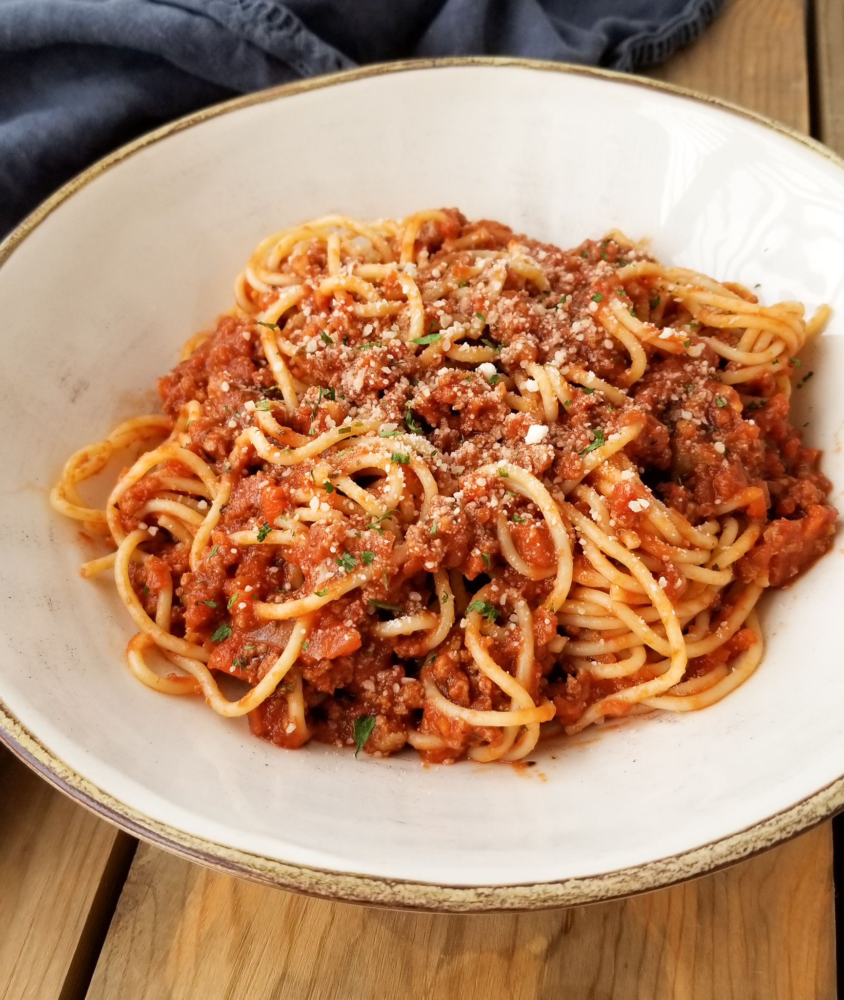

Home
Turkey Spaghetti Recipe

Description
Turkey spaghetti is a delicious and healthier twist on the classic spaghetti dish, featuring ground turkey as the main protein. It's made by cooking ground turkey with aromatic vegetables like onions, garlic, and bell peppers, then simmering it in a rich tomato sauce seasoned with Italian herbs. The sauce is tossed with al dente spaghetti, creating a hearty and flavorful meal. Topped with grated Parmesan cheese, turkey spaghetti offers a satisfying and nutritious option for pasta lovers.
Ingredients
- Ground Turkey
- Spaghetti
- Olive Oil
- Onion
- Garlic Cloves
- Bell Pepper
- Canned Diced Tomatoes
- Tomato Paste
- Italian Seasoning
- Salt
- Pepper/li>
- Grated Parmesan Cheese
Steps
- Boil a large pot of salted water. Add the spaghetti and cook according to the package instructions until al dente. Drain and set aside.
- In a large skillet, heat 2 tablespoons of olive oil over medium heat. Add 1 chopped onion and 2 minced garlic cloves. Sauté until the onion is translucent
- Add 1 chopped bell pepper to the skillet and cook for another 3-4 minutes until softened.
- Add 1 pound of ground turkey to the skillet. Cook until browned, breaking it up with a spoon as it cooks.
- Season the turkey with 1 teaspoon of salt, 1/2 teaspoon of pepper, and 1 tablespoon of Italian seasoning. Stir in 1 can of diced tomatoes (14.5 oz) and 2 tablespoons of tomato paste. Mix well.
- Reduce the heat to low and let the sauce simmer for about 15-20 minutes, stirring occasionally.
- Add the cooked spaghetti to the skillet with the sauce. Toss to combine and ensure the spaghetti is well-coated with the sauce. Serve hot, garnished with grated Parmesan cheese.